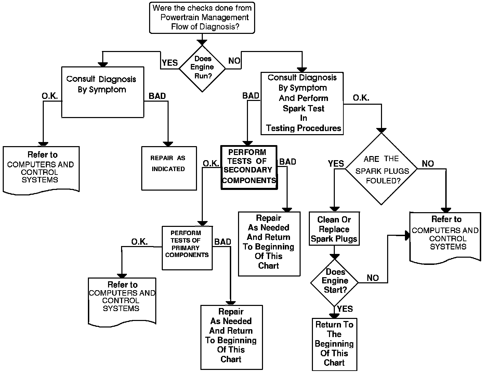

Operation CHARM
: Car repair manuals for everyone.
Home
>>
Acura
>>
1994
>>
Legend Sedan V6-3206cc 3.2L SOHC FI
>>
Repair and Diagnosis
>>
Powertrain Management
>>
Ignition System
>>
Testing and Inspection
>>
Flow of Diagnosis
Flow of Diagnosis
Flow Of Diagnosis - Ignition System:
